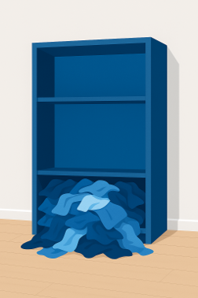
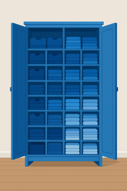
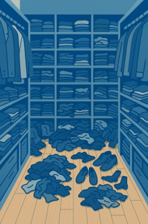

Lecture III - Caching
Programming: Everyday Decision-Making Algorithms
Kühne Logistics University Hamburg - Winter 2025
Learning Objectives
By the end of this lecture, you will be able to:
- Explain the fundamental concepts of caching and its importance
- Compare different cache replacement strategies
- Identify caching principles in everyday life
- Apply caching concepts to personal productivity
- Understand the relationship between caching and attention management
Introduction
A Quick Question First
Question: How many of you have a messy desktop right now?
Raise your hand!
Today’s lecture will explain why that matters more than you think…
Let’s approach the topic using an everyday decision
- We have a problem: Our cupboard.
- It’s time to put things in order.

Question: What could we do?
- Better organization
- Clearing out things we no longer need
- Now we have two problems:
- Storing?
- Clearing out?

Two Approaches to Storage Problems
- Better Organization:
- Subdivide storage
- Efficient sorting
- More Space:
- Increase capacity
- Question: Which approach is better?
Even best organization has limits
- Organization helps, but takes time.
- More space helps, but has limits.
- Every storage has a finite capacity.
Question: What do we do, when the storage is full?

We could increase the capacity
But…
- Increasing capacity = costly
- Trade-off: Size vs. Speed
- Larger = slower to search
- Sooner or later: Still fills up

Question: What else faces this problem?
- Cupboards
- Computers
- Email inbox
- Smartphones
- Warehouses
- Our brain?!
Question: Impact of full storage?
- Access speed drops
- Processing time up
- Performance down
Clearing out
Why Clearing Out Matters
- True for cupboards, computers, brains…
- But what stays and what goes?
Learning from Computer Science
The evolution of computer memory
- 1950s: Computer science faced the same problem
- Processors got faster (Moore’s Law)
- Memory demands grew
- But memory speed couldn’t keep up
→ The Memory Wall
The Bottleneck
- Modern CPUs: Billions of ops/second
- Problem: Data isn’t available fast enough
- Question: What’s the point of a fast CPU if it has to wait for slow memory?
→ Von Neumann Bottleneck
Cache
Cache: The Solution
A hierarchical memory system
- L1 Cache: Tiny but ultra-fast (64-256 KB)
- L2/L3 Cache: Larger, still fast (MB range)
- RAM: Main workspace (8-32 GB)
- Storage: Huge but slow (256 GB - 2 TB)
Like a library…
The Library Principle
- Library storage (5 million books, Mass Storage)
- Subject locations (100K books, RAM)
- Your desk (5 borrowed books, L2)
- Short-term memory (current page, L1)
Closer = Faster = Smaller

The Trade-off: Size and Speed

Registers are 10 million times faster than the hard drive!
Why can’t we just make everything as fast as L1 cache?
Why the Trade-off?
Why not make everything ultra-fast?
- Physical limits: Larger caches sit further from CPU, signals take longer to travel, and dense fast memory generates extreme heat that must be dissipated
- Economic limits: SRAM costs $50,000/GB vs. HDDs at $0.02/GB
- Solution: Multiple cache levels, each optimized for different needs
The nessecity of clearing out
- L1 and L2 cache only contain most necessary data.
- The same should apply to your desk.
- Therefore, both must be cleared regularly.
Clearing out Strategies
Question: Eviction Strategies?
- Random
- First-In, First-Out (FIFO)
- Least Frequently Used (LFU)
- Least Recently Used (LRU)
How to clear up?
- Optimal: Clairvoyance
- Keep what you’ll need
- Remove what you won’t
- Question: What’s the problem?
→ Requires knowledge of the future!
Realistic Strategies
- Least Recently Used (LRU) is the dominant strategy.
- Evicts the least recently accessed item from the cache when space is needed.
- Leads to much better performance on average than, for example, random eviction.
- Question: Why do you think least recently used is the better strategy?
Why LRU Works: The Principle of Temporal Locality
- Temporal Locality: Recent use → Likely need again soon
- Examples:
- Books on your desk
- Apps opened today
- People texted this morning
- Performance: 80-90% hit rate (vs. 50-60% random)
Recent past predicts near future
Managerial and personal insights:
- Let go of unused things → LRU principle
- Keep things where used → Spatial locality
- Result: Significant productivity increase
Marie Kondo = LRU for physical objects!
Spatial Locality
Question: Can you think of examples where spatial locality is applied in your daily life?

Mathematically optimal
Productivity
Our Brains are Caches
- We’ve learned how computers manage limited cache space
- But why does this matter for humans?
- Your brain works remarkably similar to a computer cache:
- Limited capacity for active information
- Fast access to recently used information
- Must constantly decide what to keep and what to forget
Cache Vulnerabilities
- Denial-of-Service (DoS) attacks exploit cache limitations:
- Cache Flooding: Overload with excessive requests
- Cache Poisoning: Insert malicious data to evict important information
- These attacks overload a system with excessive requests or data.
- Causing it to slow down or crash.
- The system is forced to evict important data.
Productivity Killers
- Overload (too much information, cache capacity exceeded)
- Exhaustion (too long without “cache clearing”)
- Context switching (interruption of “flow”, ~23 minutes to get back on track)
- Distraction (Cache Flooding: constant notifications, social media)
- Misinformation (Cache Poisoning: fake news, misleading information)
The Attention Crisis
- Technology & Social Media: Designed to capture attention (Cache Flooding)
- Constant Interruptions: Notifications = Forced cache evictions
- Result: Reduced creativity, critical thinking, and productivity
Reflection: How many times did you check your phone during this lecture?
The Solution: Manage Your Mental Cache
- Limit screen time and practice “monotasking” (Reduce cache thrashing).
- Prioritize sleep, nutrition, and mindful habits (Maintain cache performance).
- Create protected time for deep work (Prevent cache flooding).
- Be selective about what enters your attention (Smart cache management).
Mitigation
Mitigation
- Distraction can hardly be avoided in today’s world but can be mitigated.
- This is particularly important for managers.
- This lecture is designed to raise your awareness of what you can do to keep your brain working efficiently.
- Want to dive deeper? Read “Stolen Focus” by Johann Hari
Awareness: Three Levels of Attention
- Spotlight – Immediate goals – Focus (Your L1 Cache: What are you working on RIGHT NOW?)
- Starlight – Medium-term goals – Wishes (Your L2 Cache: What matters this week/month?)
- Daylight – Long-term goals – Values (Your Storage: What defines your life direction?)
Practical Strategies
- Prioritization: What deserves to be in your mental cache?
- Structure (Schedule): Time-boxing prevents cache overflow
- Breaks: Regular “cache clearing” prevents exhaustion
- Enable flow: Dedicated workspace, manage notifications, clear communication
- Meditation & exercise: Maintenance routines for optimal cache performance
Cache Hierarchy for Workspace
- Hot Cache (On your desk): Only items for current tasks (today)
- Warm Cache (Nearby shelf/drawer): This week’s projects (this week)
- Cold Storage (Archive/closet): Everything else
→ The key principle: If you haven’t used it recently, move it away!
Self-Assessment
Question: Right now:
- How many browser tabs do you have open? ___
- How many notifications did you receive in the last hour? ___
- How many unread emails in your inbox? ___
Do you see any risks of cache flooding?
Key Takeaways
Key Takeaways: The Concepts
- Caching is universal: It applies to computers, organizations, and human cognition
- The fundamental trade-off: Fast storage is small, large storage is slow
- LRU works because of temporal locality: Recent past predicts near future
Key Takeaways: Your Life
- Your brain is a cache: Limited capacity, vulnerable to flooding and poisoning
- Protect your attention: It’s your scarcest and most valuable resource
- Apply caching principles to life: Keep what you use, remove what you don’t
Literature
Interesting literature to start
- Christian, B., & Griffiths, T. (2016). Algorithms to live by: the computer science of human decisions. First international edition. New York, Henry Holt and Company.1
- Ferguson, T.S. (1989) ‘Who solved the secretary problem?’, Statistical Science, 4(3). doi:10.1214/ss/1177012493.
Books on Programming
- Downey, A. B. (2024). Think Python: How to think like a computer scientist (Third edition). O’Reilly. Here
- Elter, S. (2021). Schrödinger programmiert Python: Das etwas andere Fachbuch (1. Auflage). Rheinwerk Verlag.
Think Python is a great book to start with. It’s available online for free. Schrödinger Programmiert Python is a great alternative for German students, as it is a very playful introduction to programming with lots of examples.
More Literature
For more interesting literature, take a look at the literature list of this course.
Lecture III - Caching | Dr. Nils Roemer | Home